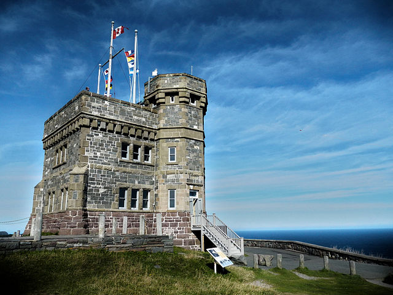

Signal Hill
Signal Hill is a hill which overlooks the harbour and city of St. John's, Newfoundland and Labrador, Canada. The majority of Signal Hill, including Cabot Tower, is designated a National Historic Site. The highest point, Ladies' Lookout, is 167 m (548 ft) high. Due to its strategic placement overlooking the Narrows, the only entrance to the harbour, fortifications date back to the mid 17th century.
